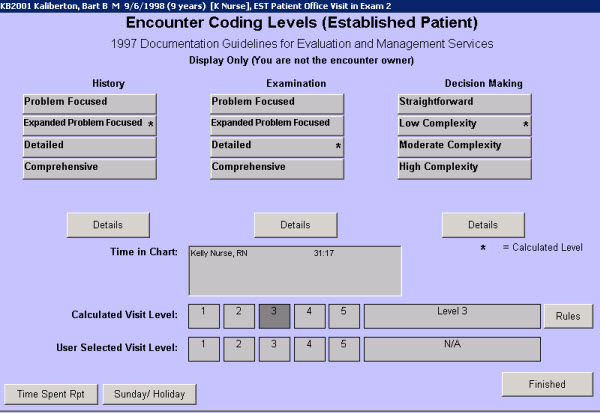

|
Description
This screen shows how encounterPRO has calculated the E & M coding level for this encounter. The level reached for History, Examination, and Decision Making will show an asterisk (*).
How to Access This Screen
Access this screen by:
- Selecting the E & M Coding Level button on the Patient Chart
- Selecting the Current Visit Level number on the Billing Review screen (Exit from the Patient Chart)
Screen Elements

 NOTE: Notice the Time in Chart text box. EncounterPRO will track the amount of time each user spends working on the patient chart. This is for information only, it is not used in calculating the E & M visit level. If the provider reviews the amount of time spent with the patient and believes that this justifies a higher visit level, he or she can select the appropriate level using the buttons on the User Selected Visit Level. NOTE: Notice the Time in Chart text box. EncounterPRO will track the amount of time each user spends working on the patient chart. This is for information only, it is not used in calculating the E & M visit level. If the provider reviews the amount of time spent with the patient and believes that this justifies a higher visit level, he or she can select the appropriate level using the buttons on the User Selected Visit Level.
Want to Learn More?
Related Solutions
Concept: Encounter Visit Levels
Screen: Concept: How encounterPRO Calculates E & M Coding
How to: Review the Calculated Encounter Visit Level
How to: Modify the Billing for an Encounter
|